<div class="mgj_rightbar">
    <div class="mgj_r_blank"></div>
    <div class="sidebar mgj_my_car">
        <a href="#">
            
            <div class="s-txt"><a href="car.html">购物车</a></div>
            <span></span>
        </a>
    </div>
    <div class="sidebar">
        <a href="#">
            
            <div class="s-txt">优惠券</div>
            <span></span>
        </a>
    </div>
    <div class="sidebar">
        <a href="#">
            
            <div class="s-txt">钱包</div>
            <span></span>
        </a>
    </div>
    <div class="sidebar">
        <a href="#">
            
            <div class="s-txt">足迹</div>
            <span></span>
        </a>
    </div>
    <div class="toTop"><span></span></div>
</div>

<script>
        var toTop = document.querySelector(".toTop");
        window.onscroll = function(){
            // 获取滚动条滚动果的距离
            var scrollTop = window.scrollY;
            // 滚动到1000时显示返回顶部效果
            if(scrollTop >= 1000){
                toTop.style.display = 'block';
            }else{
                toTop.style.display = 'none';
            }
        }
        // 点击返回顶部
        toTop.onclick = function(){
            var timer = setInterval(function(){
                // 滚动过的距离越大，返回越快
                var scrollTop = window.scrollY;
                // 计算速度
                var speed = Math.floor(scrollTop/10);
                if(scrollTop<=10 || speed === 0){
                    clearInterval(timer);
                }
                window.scrollBy(0,-speed);
            },30);
        }

</script>
